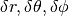

BaseDifferential¶
-
class
astropy.coordinates.BaseDifferential(*args, **kwargs)[source] [edit on github]¶ Bases:
astropy.coordinates.BaseRepresentationOrDifferentialA base class representing differentials of representations.
These represent differences or derivatives along each component. E.g., for physics spherical coordinates, these would be .
Parameters: d_comp1, d_comp2, d_comp3 :
Quantityor subclassThe components of the 3D differentials. The names are the keys and the subclasses the values of the
attr_classesattribute.copy : bool, optional
If
True(default), arrays will be copied rather than referenced.Notes
All differential representation classes should subclass this base class, and define an
base_representationattribute with the class of the regularBaseRepresentationfor which differential coordinates are provided. This will set up a defaultattr_classesinstance with names equal to the base component names prefixed byd_, and all classes set toQuantity, plus properties to access those, and a default__init__for initialization.Attributes Summary
recommended_unitsMethods Summary
from_cartesian(other, base)Convert the differential from 3D rectangular cartesian coordinates to the desired class. from_representation(representation, base)Create a new instance of this representation from another one. norm([base])Vector norm. represent_as(other_class, base)Convert coordinates to another representation. to_cartesian(base)Convert the differential to 3D rectangular cartesian coordinates. Attributes Documentation
-
recommended_units= {}¶
Methods Documentation
-
classmethod
from_cartesian(other, base)[source] [edit on github]¶ Convert the differential from 3D rectangular cartesian coordinates to the desired class.
Parameters: other :
The object to convert into this differential.
base : instance of
self.base_representationThe points for which the differentials are to be converted: each of the components is multiplied by its unit vectors and scale factors.
Returns: A new differential object that is this class’ type.
-
classmethod
from_representation(representation, base)[source] [edit on github]¶ Create a new instance of this representation from another one.
Parameters: representation :
BaseRepresentationinstanceThe presentation that should be converted to this class.
base : instance of
cls.base_representationThe base relative to which the differentials will be defined. If the representation is a differential itself, the base will be converted to its
base_representationto help convert it.
-
norm(base=None)[source] [edit on github]¶ Vector norm.
The norm is the standard Frobenius norm, i.e., the square root of the sum of the squares of all components with non-angular units.
Parameters: base : instance of
self.base_representationBase relative to which the differentials are defined. This is required to calculate the physical size of the differential for all but cartesian differentials.
Returns: norm :
astropy.units.QuantityVector norm, with the same shape as the representation.
-
represent_as(other_class, base)[source] [edit on github]¶ Convert coordinates to another representation.
If the instance is of the requested class, it is returned unmodified. By default, conversion is done via cartesian coordinates.
Parameters: other_class :
BaseRepresentationsubclassThe type of representation to turn the coordinates into.
base : instance of
self.base_representation, optionalBase relative to which the differentials are defined. If the other class is a differential representation, the base will be converted to its
base_representation.
-
to_cartesian(base)[source] [edit on github]¶ Convert the differential to 3D rectangular cartesian coordinates.
Parameters: base : instance of
self.base_representationThe points for which the differentials are to be converted: each of the components is multiplied by its unit vectors and scale factors.
Returns: This object as a
CartesianDifferential
-